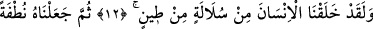
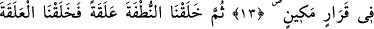
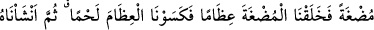
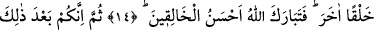
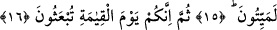
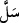
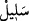
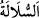

İNSANIN YARATILIŞ SAFHALARI
12. Andolsun biz insanı, çamurdan (süzülüp çıkarılmış) bir özden yarattık.
13. Sonra onu sağlam bir karargâhta nutfe haline getirdik.
14. Sonra nutfeyi alaka (aşılanmış yumurta) yaptık. Peşinden, alakayı, bir
parçacık et haline soktuk; bu bir parçacık eti kemiklere (iskelete) çevirdik; bu
kemikleri etle kapladık. Sonra onu başka bir yaratışla insan haline getirdik. Yapıp-
yaratanların en güzeli olan Allah pek yücedir.
15. Sonra, muhakkak ki siz, bunun ardından elbet öleceksiniz.
16. Sonra da şüphesiz, siz kıyamet gününde tekrar diriltileceksiniz.
“Andolsun biz insanı,” yani Allah’a yemin olsun ki biz insan cinsini Âdem’in
yaratılışı zımnında icmâlî olarak “çamurdan (süzülüp çıkarılmış) bir özden yarattık.”
“
”: Bir şeyi bir şeyden çıkardı, demektir. Kılıcı kınından çıkarmak, hırsızlık yoluyla
evden bir şeyi çıkarıp almak, çocuğun babanın neslinden olması gibi. Çocuğa “
”
denilmesi bundandır. “
” bir şeyden meydana gelen ve çıkarılan şeye verilen
isimdir. Celâleyn’de belirtildiği gibi âyette ‘çamurdan süzülüp çıkarılan bir özden,
çamurdan çekilip alınmış olan temiz ve seçkin kısımdan’ demektir.
“
(çamur)”, kendisine su karışmış topraktır.
et-Te’vîlâtü’n-Necmiyye’de der ki: “Yeryüzünün tamamından; iyisinden, çorağından,
ovasından, dağından farklı renklerde ve tabîatlarda süzülüp çıkarılan öze (sülâle) işâret
etmektedir. Bu yüzden insanların renkleri ve ahlâkı çeşit çeşittir. Çünkü onların
tabiatlarına
çamurun
özelliklerinden
bir
özellik
yerleştirilmiştir.
Çamurun
özelliklerinden her biri evcil hayvanlardan, yırtıcı ve parçalayıcı hayvanlardan, eziyet
veren haşarat cinsinden bir hayvan türüne mahsustur. Onlardan her birine yerilen ve
övülen sıfatlardan birisi gâlibdir.
Yerilenler şunlardır: Fare ve karıncadaki hırs, serçedeki şehvet, panter ve aslandaki
öfke, kaplandaki kibir, köpekteki cimrilik, hınzırdaki oburluk/açgözlülük, yılandaki kin
ve bunlardan başka diğer yerilen sıfatlar gibi.
Övülenler ise şunlardır: Aslandaki cesâret, horozdaki sehâvet (cömertlik), baykuştaki